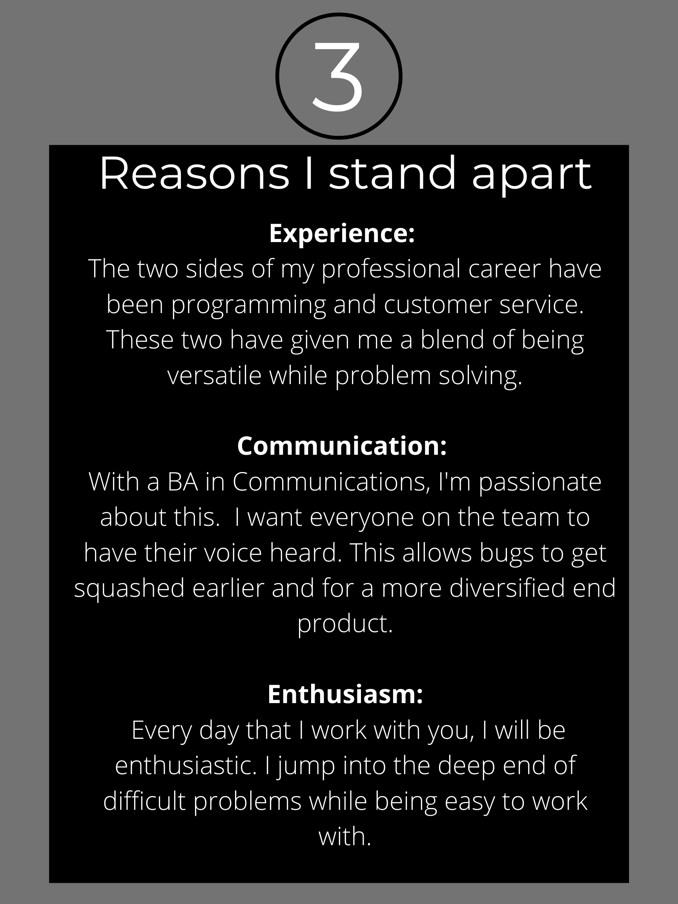

<app-page-layout [title]="'Resume'">
    <div class="resumeContent">
        <div class="resumeGraphicBox">
            
        </div>
        <div style="background-color: lightgrey; border-top: 1px black solid">
            <p class="resumeTitleHeader">Resume</p>
            <hr style="width: 80%; color: orange" />
    
            <p class="jobHeader">Software Engineer</p>
            <p class="jobSubHeader">Aug 2018 - July 2021</p>
            <div class="jobDescriptionBox">
                <div class="jobContentBox">
                    <p style="font-weight: bold;">What I did</p>
                    <p>
                        The primary project I worked on was a rebuild of their administrative website. 
                        This included building out the front end in Angular2, supporting it with REST 
                        APIs on the back end, along with testing at all levels.
                    </p>
                </div>
                
                <div class="jobContentBox">
                    <p style="font-weight: bold;">What I learned</p>
                    <p>Since I was tackling such a variety of tasks,
                       I was able to learn an incredible amount about architecture and programming. 
                       Just a couple of these included implementing 2 Factor Authentication 
                       and upgrading their MySQL databases.</p>
                </div>
                
            </div>
    
            <p class="jobHeader">Customer Service Supervisor</p>
            <p class="jobSubHeader">May 2017 - Sept 2017</p>
            <div class="jobDescriptionBox">
                <div class="jobContentBox">
                    <p style="font-weight: bold;">What I did</p>
                    <p>
                        I worked as a supervisor for the front end of the store. 
                        This incorporated the responsibilities of working with 
                        customers and ensuring success with our teammates. 
                        It also included starting several projects included 
                        reorganizing the Green Team documentation.
                    </p>
                </div>
                
                <div class="jobContentBox">
                    <p style="font-weight: bold;">What I learned</p>
                    <p>
                        While I had worked in customer service for 5 years already, 
                        this taught me an immense amount about what it meant to be a good 
                        leader and coworker. As supervisors needed to deal with escalated 
                        customer situations, it taught me how to stay calm in difficult situations.
                    </p>
                </div>
                
            </div>

            <div class="downloadResumeBox">
                <p style="width: 50%;"> 
                    If you would like to download a pdf version of my resume, 
                    it can be found here: 
                    <a download="alex-cutschall-resume" target="_blank" href="/assets/alex-cutschall-resume.pdf">
                        Resume
                    </a>
                </p>
            </div>
            <br style="padding-bottom: 50px"/>
        </div>
    </div>
</app-page-layout>
